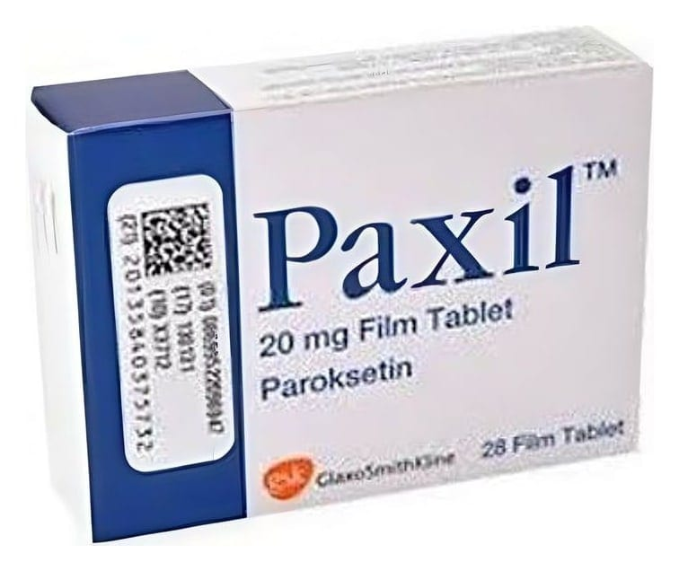

Paxil 20 mg Film Tablet, 28 Adet

Ne için kullanılır
KT · Bölüm 1PAXİL’in etkin maddesi paroksetindir ve SSRİ (Selektif Serotonin Geri Alım İnhibitörleri) adı verilen bir ilaç grubuna dahildir. PAXİL’in ve diğer SSRİ’ların nasıl çalıştığı tam olarak anlaşılamamıştır, ancak beyindeki serotonin seviyesini artırarak tedaviye yardımcı olabilirler. Depresyon veya anksiyete bozukluklarını tedavi etmek, iyileşmenize yardımcı olmak için önemlidir.
PAXİL, çocuk emniyetli blister ambalajlarda sunulmaktadır ve her kutuda 28 veya 56 tablet bulunur. Bir tarafında “20” işareti, diğer tarafında çentik bulunan beyaz, oval, bikonveks, film kaplı tablettir. Çentiğin amacı tabletin eşit dozlara bölünmesidir. Böylece tablet 10 mg’lık eşit yarımlara bölünebilir.
PAXİL, aşağıdaki durumlardan herhangi biri olan YETİŞKİNLERE reçete edilebilir: • Majör depresif bozukluk • Obsesif (saplantılı) ve kompülsif (kontrol edilemeyen) bozukluk • Kişinin toplum önüne çıkması gereken durumlarda yaşadığı aşırı endişe ve gerginlik • Travmatik olayları, örneğin trafik kazası, fiziksel saldırı, sel veya deprem gibi doğal felaketleri takip eden aşırı endişe
• Açık alan korkusundan (agorafobi) kaynaklananlar dahil çeşitli korkulardan kaynaklanan panik ataklar • Yaygın endişe ve gerginlik hali